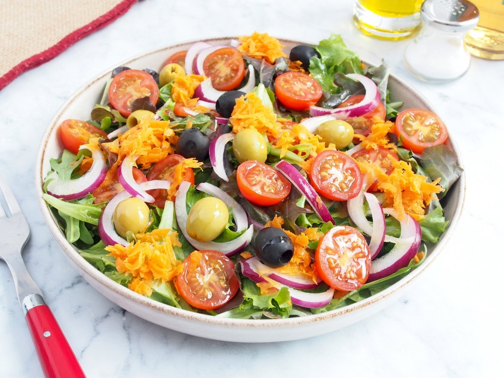

Ensalada Mediterránea
Ingredientes
- 2 tomates maduros
- 1 pepino
- 1/2 cebolla morada
- 100 g de queso feta
- Aceitunas negras
- Aceite de oliva virgen extra
- Sal y orégano al gusto

Pasos de elaboración
- Lava bien los vegetales y córtalos en trozos medianos.
- Pica la cebolla morada en tiras finas.
- Mezcla los tomates, pepino, cebolla y aceitunas en un bol.
- Añade el queso feta desmenuzado o en cubos.
- Aliña con aceite de oliva, sal y orégano al gusto.
- Mezcla suavemente y sirve fresca.
Descargar receta en PDF
Volver al menú principal